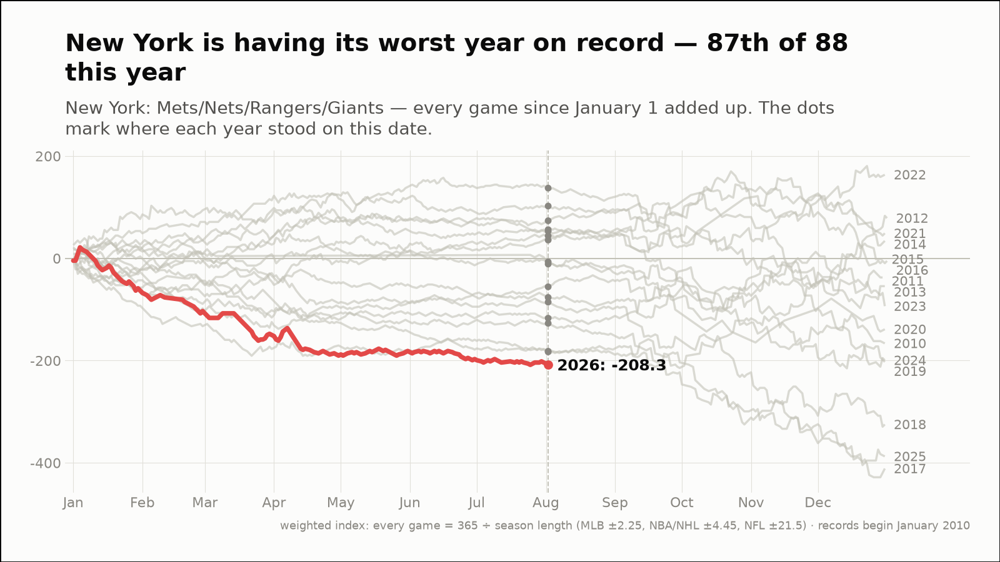
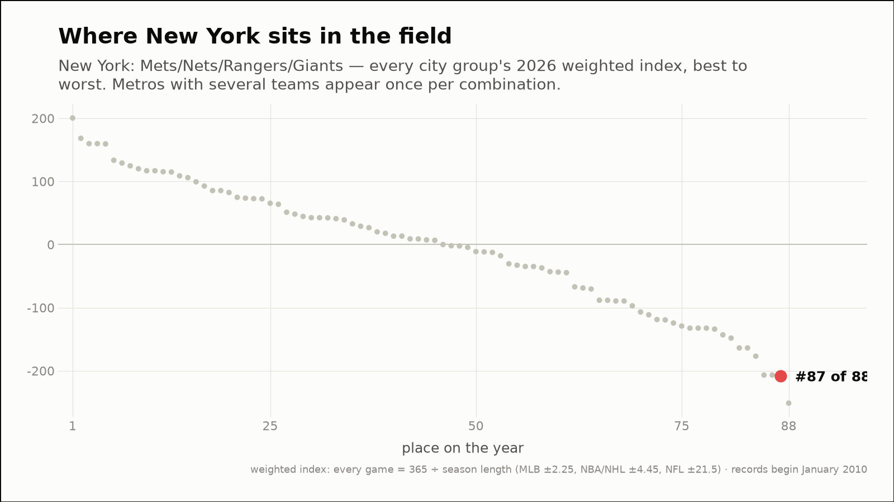
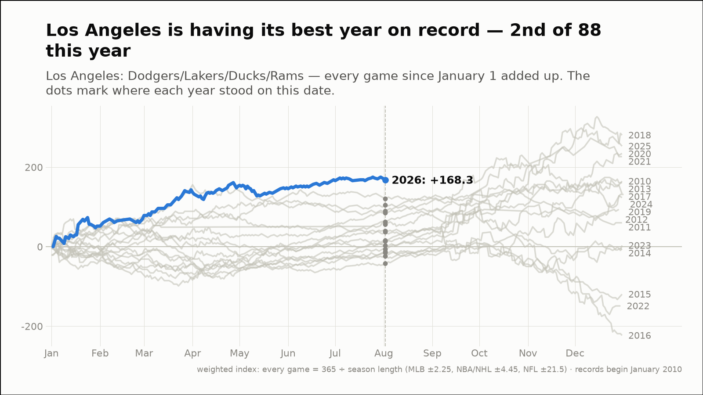
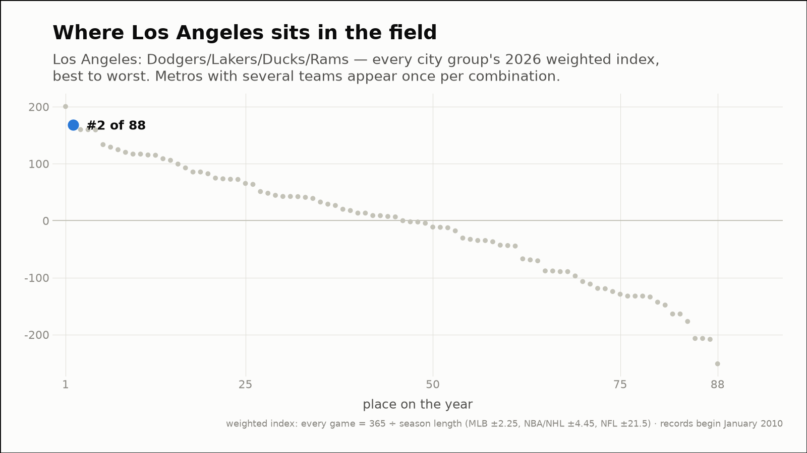
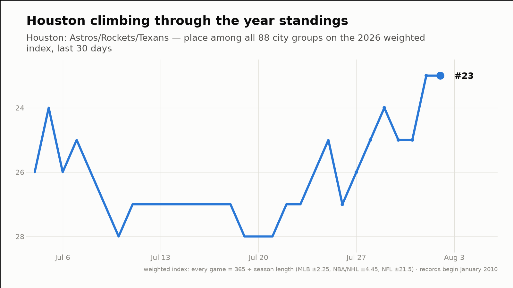
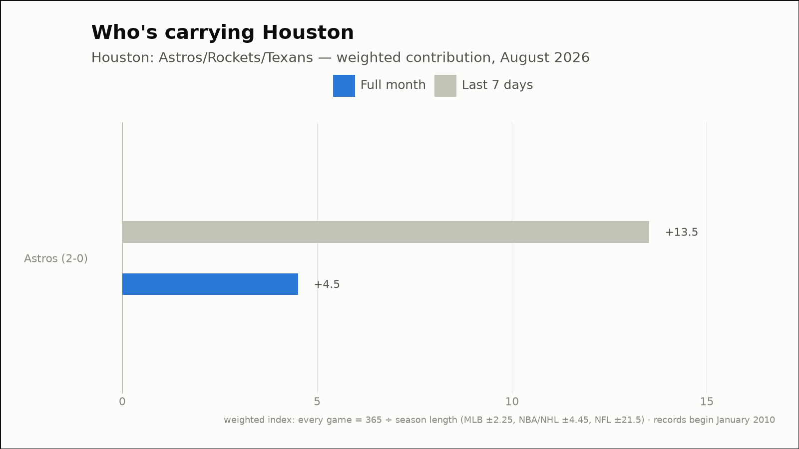

Out of the norm — three fandoms off their own script
The weekly hunt across all 88 city groups, through August 2, 2026
New York is having its worst year on record — 87th of 88 this year
New York: Mets/Nets/Rangers/Giants
- 2026 so far (through August 2)
- 73-133, -208.3 weighted — the worst of the 17 years on record, at the same point
- Against the field
- 87th of 88 city groups on the year (1st percentile)
- This month (through August 2)
- 0-2, -4.5 weighted
- Last 7 days
- 3-4, -2.3 weighted
- Driving it this week
- Mets (3-4, -2.3)
- Active streaks
- Mets L3


Los Angeles is having its best year on record — 2nd of 88 this year
Los Angeles: Dodgers/Lakers/Ducks/Rams
- 2026 so far (through August 2)
- 137-94, +168.3 weighted — the best of the 17 years on record, at the same point
- Against the field
- 2nd of 88 city groups on the year (99th percentile)
- This month (through August 2)
- 0-2, -4.5 weighted
- Last 7 days
- 2-4, -4.5 weighted
- Driving it this week
- Dodgers (2-4, -4.5)
- Active streaks
- Dodgers L3


Houston has climbed 4 places in the 2026 standings this week (27th → 23rd of 88)
Houston: Astros/Rockets/Texans
- Year standings
- 27th → 23rd of 88 (+59.2 → +72.7 weighted)
- This month (through August 2)
- 2-0, +4.5 weighted
- Last 7 days
- 6-0, +13.5 weighted
- Driving it this week
- Astros (6-0, +13.5)
- Active streaks
- Astros W6

